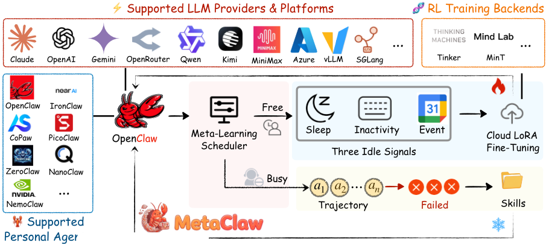
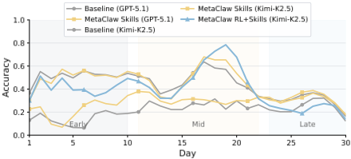
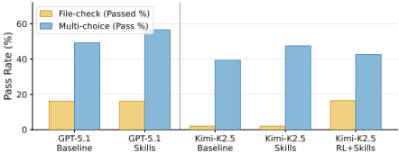

MetaClaw：只需开口——一个在真实使用中元学习并持续进化的 Agent
论文针对已部署 LLM Agent 能力静态固化、随真实任务分布漂移而逐渐失效的问题，提出持续元学习框架 MetaClaw，同时维护基础 LLM 策略与由可复用行为指令构成的技能库。方法包含两条互补机制：技能驱动的快速适应由 LLM evolver 分析失败轨迹并合成新技能，以提示注入方式即时生效、零服务停机；机会式策略优化由 OMLS 调度器监控睡眠时段、键盘闲置与 Google Calendar 占用三类空闲信号，仅在用户不活跃窗口通过云端 LoRA + GRPO（配 process reward model）更新权重，并用技能版本机制隔离 support/query 数据、防止过期奖励污染梯度更新。在自建 MetaClaw-Bench（934 题、44 个模拟工作日）上，技能适应使 Kimi-K2.5 准确率相对提升 32.2%，完整流程将其从 21.4% 提到 40.6%（接近 GPT-5.2 基线 41.1%），端到端任务完成率提升 8.25 倍；在 23 阶段 AutoResearchClaw 研究流水线上，仅技能注入就使综合鲁棒性提升 18.3%。其'从失败会话蒸馏可迁移行为规则并注入提示'的模式对团队构建工程自动化 Agent 有直接借鉴价值。
已部署的 LLM Agent 通常是静态的：训练一次后不再变化，而真实使用中任务分布持续漂移，导致模型在预训练欠代表的任务类型上反复失败。现有三类方法各有局限：记忆类方法只存原始轨迹，冗长且难以提炼可迁移行为模式；技能类方法把技能库当作与权重优化脱节的静态数据库；RL 类方法在小规模/离线设置下运行，且忽视关键的数据有效性问题——技能进化后，旧技能上下文下收集的轨迹携带过期奖励，不加过滤地复用会污染梯度更新。
MetaClaw 将 Agent 建模为元模型 M=(θ, S)：θ 为基础 LLM 策略，S 为注入 system prompt 的可复用行为指令技能库，通过两个时间尺度的机制协同进化。(1) 技能驱动快速适应：LLM evolver 分析失败轨迹、合成新技能（遵循 Claude skill 格式），梯度无关、经提示注入零停机即时生效；推理时用 sentence embedding 余弦相似度做 top-k 技能检索。(2) 机会式策略优化：OMLS 后台守护进程监控睡眠窗口、系统输入设备闲置（如 macOS ioreg HIDIdleTime）与 Google Calendar 占用三类空闲信号，仅在用户不活跃时通过云端 LoRA 微调（GRPO + process reward model）更新权重，支持碎片化空闲窗口的暂停/恢复与权重热替换。(3) 技能生成版本机制：为每条轨迹打上技能代数版本戳，技能进化时从 RL buffer 清除旧版本样本，严格分离 support 数据（技能进化消费的失败轨迹）与 query 数据（适应后轨迹），防止过期奖励污染。系统基于 proxy 架构，无需本地 GPU。附录还给出 system prompt 压缩模板以防长会话上下文溢出。
MetaClaw-Bench（934 题、44 个模拟工作日）：技能驱动适应使 Kimi-K2.5 Part I 准确率从 21.4% 升至 28.3%（相对 +32.2%）、Part II 从 21.1% 至 26.9%（+27.5%）；GPT-5.2 Part I 从 41.1% 至 44.0%（+7.1%）、Part II 从 44.9% 至 49.1%（+9.4%）
完整流程 MetaClaw (Full)（仅评测 Kimi-K2.5）：Part I 准确率达 40.6%（接近 GPT-5.2 基线 41.1%），端到端任务完成率从 2.0% 升至 16.5%（8.25 倍）；Part II file-check 完成率从 18.2% 升至 51.9%（相对 +185%）
AutoResearchClaw（23 阶段自主研究流水线）上仅技能注入、无任何梯度更新：stage retry rate 从 10.5% 降至 7.9%（-24.8%），refine cycles 从每阶段 2.0 降至 1.2（-40.0%），流水线完成从 18/19 提升至 19/19（+5.3%），综合鲁棒性得分从 0.714 升至 0.845（+18.3%）
RL 训练动态：Kimi-K2.5 的 file-check 完成率在第 8 天出现拐点，从第 1-4 天约 9% 升至第 9-10 天 55-64%，并在第 12、14 天达到 100%，验证了技能先行、RL 随后的两阶段互补时间尺度假设
技能库分析：30 天会话中合成的技能集中于三类跨任务失败模式——时间格式合规（ISO 8601 带时区）、修改前备份协议（.bak 文件）、日期前缀命名规范
相对已有工作的区别：(1) 记忆/技能类方法（Reflexion、Mem0、SimpleMem、Voyager、ExpeL、Agent-KB 等）将技能库或记忆视为静态产物、从不与权重级优化协调，MetaClaw 通过显式 support-query 分离将技能进化与策略优化耦合为互促循环；(2) RL 类方法（GRPO、DAPO 等）针对固定策略与固定奖励优化，不处理行为上下文变化后哪些数据仍可用于训练、何时训练两个部署约束，MetaClaw 用技能版本机制与机会式调度分别解决；(3) 将元学习目标扩展到非平稳 LLM Agent 任务流：快适应是离散自然语言空间中的梯度无关技能合成，慢适应是基于梯度的 RL，并以版本协议在在线异步环境中保持 support-query 结构。
相关度级别：high
命中能力域：3.1 上下文工程与记忆 | 3.2 提示工程 | 3.3 Agent 架构与工具使用 | 3.5 评测与可靠使用
理由：论文直接命中团队多个能力域：技能库作为跨任务积累行为知识的记忆系统、配合 embedding 检索注入 system prompt（3.1 记忆与上下文组织、3.3 技能系统）；失败轨迹经 LLM evolver 自动蒸馏为行为指令属于提示级自动优化，附录还提供完整的 skill evolver prompt 与 system prompt 压缩模板（3.2）；技能注入与 RL 分别解决部分执行质量与端到端完成两类不同瓶颈，属于单 Agent 执行可靠性研究（3.3）；自建持续适应基准 MetaClaw-Bench、多指标可靠性评估与零本地 GPU 的成本设计（3.5）。'从失败会话中沉淀可复用技能并即时注入'这一模式与团队构建代码生成/审查、文档、测试辅助等工程自动化 Agent 的经验沉淀需求高度吻合，且技能注入部分完全在提示层运作、可低成本移植；权重级 RL 部分涉及云端 LoRA 微调，超出团队'不训练模型'的边界，可作为进阶路径了解。
建议动作：深入精读并做内部分享
arXiv:2603.17187v1 [cs.LG] 17 Mar 2026
Peng Xia 1 ∗ , Jianwen Chen 1 ∗ , Xinyu Yang 2 ∗ , Haoqin Tu 3 ∗ , Jiaqi Liu 1 ∗ , Kaiwen Xiong 1 ∗ , Siwei 1 1 1 3 4 3 1 ∗
Han , Shi Qiu , Haonian Ji , Yuyin Zhou , Zeyu Zheng , Cihang Xie , Huaxiu Yao 1 北卡罗来纳大学教堂山分校（UNC-Chapel Hill），2 卡内基梅隆大学（Carnegie Mellon University），3 加州大学圣克鲁兹分校（UC Santa Cruz），4 加州大学伯克利分校（UC Berkeley），∗ 核心贡献者
大语言模型（LLM）智能体已迅速崛起，成为处理复杂多步骤任务的强大助手；然而，部署在真实环境中的智能体在很大程度上仍然是静态的：它们仅训练一次，此后无论用户需求如何演变，都以一成不变的方式提供服务。这造成了一个根本性的矛盾：它们必须不间断地持续为用户服务，但随着任务分布随真实使用而发生漂移，其能力又会逐渐过时。在 OpenClaw 这类平台上，单个智能体需要连接 20 多个消息渠道并处理多样且不断演变的工作负载，而现有方法要么只存储原始轨迹而不提炼可迁移的行为知识，要么维护与权重优化相脱节的静态技能库，要么在重新训练期间造成服务停机。我们提出 MetaClaw，这是一个持续元学习框架，它同时维护一个基础 LLM 策略和一个由可复用行为指令构成、不断演化的技能库，并通过两种互补机制对二者加以改进。技能驱动的快速适应通过一个 LLM 演化器分析失败轨迹并合成新技能，可立即生效，实现零服务停机。机会性策略优化则通过云端 LoRA 微调、借助带过程奖励模型的强化学习（RL）执行基于梯度的权重更新，并且仅由机会性元学习调度器（Opportunistic Meta-Learning Scheduler, OMLS）在用户不活跃的时间窗口内触发；该调度器会监控可配置的睡眠时段、系统键盘无操作状态以及 Google Calendar 的日程占用情况。这两种机制相互促进：更好的策略能为技能合成提供信息量更大的失败案例，而更丰富的技能又能为策略优化带来奖励更高的轨迹。为防止过时奖励污染，技能生成版本化机制将支持数据（供技能演化消耗的失败轨迹）与查询数据（用于 RL 更新的适应后轨迹）严格分离。MetaClaw 构建于基于代理（proxy）的架构之上，无需本地 GPU 即可扩展至生产规模的 LLM。在 MetaClaw-Bench（934 个问题、44 个模拟工作日）和 AutoResearchClaw（23 阶段自主研究流水线）上开展的实验展示了一致的改进：技能驱动的适应使准确率相对提升最高达 32%；完整流水线将 Kimi-K2.5 的准确率从 21.4% 提升至 40.6%（对比 GPT-5.2 基线的 41.1%），并在端到端任务完成方面获得 8.25 倍的提升；仅技能注入一项便使 AutoResearchClaw 的综合鲁棒性提高了 18.3%。
大语言模型（Large Language Model, LLM）智能体已在各类复杂任务中展现出卓越能力（Yao et al., 2022; Shinn et al., 2023），然而实际部署的智能体在很大程度上仍是静态的：它们只训练一次，此后无论用户需求如何演变，都以不变的方式提供服务（Zhang et al., 2025b; Naihin et al., 2023; Song et al.）。以 OpenClaw（OpenClaw, 2026）为例，这是一个连接 20 多个消息渠道的开源命令行界面（CLI）智能体平台，单个用户的工作负载可能这一周还是多步骤文件系统操作，下一周就变成多智能体消息传递工作流。随着任务分布不断漂移，冻结的模型与实际使用模式的偏差日益加大，在预训练中代表性不足的任务类型上反复失败。
现有的智能体适应方法大致分为三类，每类都存在明显局限。基于记忆的方法（Shinn et al., 2023; Zhao et al., 2024; Fang et al., 2025; Tang et al., 2025; Ouyang et al., 2025; Chhikara et al., 2025; Liu et al., 2026a）存储原始对话轨迹以供日后检索，但这类轨迹冗长且冗余，使智能体难以从中提取可迁移的行为模式。基于技能的方法（Xia et al., 2026; Zhang et al., 2025a, 2026b; Wu et al., 2025; Zhang et al., 2026a）将经验压缩为可复用的行为指令，却把由此得到的技能库当作静态数据库，从不与权重优化相协调。基于强化学习（Reinforcement Learning, RL）的方法（Schulman et al., 2017; Ahmadian et al., 2024; Shao et al., 2024; Feng et al., 2025; Zheng et al., 2025）会更新模型权重，但仅在小规模或离线设置下运行，并且忽视了一个关键的数据有效性问题：一旦技能发生演化，在旧技能上下文中收集的轨迹便带有过时的奖励，若不加过滤地复用，这些轨迹会污染梯度更新。这三类方法的共同点在于，它们都只是孤立地处理适应问题的某一个方面，而让互补的维度未被利用。

我们的关键观察是：两种根本不同时间尺度的适应机制实际上是天然互补的。行为启发式规则（例如“读取文件前务必先验证路径”、“执行破坏性命令前先确认”）可以在几秒钟内从一次失败的对话中提炼出来，并立即作为技能指令注入。而要在多种任务类型上改进模型的底层策略，则需要基于梯度的优化，在大量轨迹上进行，时间尺度为几分钟到几小时。这两种机制还相互增强：更好的策略能为技能合成提供信息量更大的失败案例，而更丰富的技能又能为策略优化带来更高奖励的轨迹。目前尚无任何现有系统将这两种适应形式统一到一个能够利用这一良性循环的连贯框架之中。
我们提出 MetaClaw，这是一个持续元学习（continual meta-learning）(Finn et al., 2017; Yao et al., 2021) 框架，它同时维护一个基础大语言模型（LLM）策略和一个不断演化的、由可复用行为指令构成的技能库。该技能库承担双重角色：既作为在整个任务流上积累行为知识的元参数（meta-parameter），又作为适应基础，在推理时从中检索任务特定的技能。MetaClaw 通过两种机制改进这两个组件。技能驱动的快速适应执行无梯度的技能演化：由 LLM 分析失败轨迹并合成新的行为指令 (Xia et al., 2026)，这些指令立即生效且服务零停机。机会性策略优化则使用带过程奖励模型（PRM）(Zhang et al., 2025c) 的强化学习（RL），通过云端 (TML, 2026) LoRA 微调 (Hu et al., 2021) 更新模型权重，从而优化适应后的性能。两个设计原则支配着二者的协同。第一，何时运行策略优化：我们的机会性元学习调度器（Opportunistic Meta-Learning Scheduler, OMLS）监控三个空闲信号，即可配置的睡眠时段、系统键盘无操作状态以及 Google Calendar 事件占用情况，并且仅在用户不活跃的时间窗口内触发权重更新，从而消除停机时间。第二，使用哪些数据：我们将支持数据（support data，即被技能演化所消耗的失败轨迹）与查询数据（query data，即在新技能生效后收集的轨迹）区分开来。只有反映 Agent 适应后行为的查询数据才对 RL 有效；支持数据所携带的奖励是以旧技能上下文为条件的，因此被排除在外。我们的技能代际版本机制通过为每条轨迹打上其技能代际索引的标记，并在技能每次演化时从训练缓冲区中清除过时样本，来强制执行这一分离。
总而言之，我们的主要贡献是 MetaClaw——一个持续元学习框架，它将技能驱动的快速适应与机会性策略优化统一起来，使已部署的 LLM Agent 能够通过基于代理（proxy）的架构持续演化，而无需本地 GPU。我们在 MetaClaw-Bench 上进行评估，这是一个新的基准测试（benchmark），包含 934 个问题，跨越 44 个模拟工作日，其中每个工作日构成一个由真实命令行（CLI）任务（文件编辑、JSON 结构化、shell 脚本编写）组成的顺序式、反馈驱动的多轮会话。在 GPT-5.2 和 Kimi-K2.5 上开展的实验表明，仅技能驱动的快速适应一项便可使总体准确率相对提升最高达 32.2%；MetaClaw (Full) 进一步将 Kimi-K2.5 的准确率从 21.4% 提升至 40.6%，在 Part I 上将端到端任务完成率提升 8.25 倍，在 Part II 上将文件检查完成率提升 185%，并几乎消除了与 GPT-5.2 基线之间的差距。我们进一步在 AutoResearchClaw——一个 23 阶段的自主研究流水线——上进行验证，仅技能注入一项便使综合鲁棒性得分提高了 18.3%，这证明了 MetaClaw 适应机制的跨领域泛化能力。
我们考虑一个已部署的 CLI Agent，它在来自非平稳分布 p t ( τ ) 的任务流 τ 1 , τ 2 , . . . 上为用户服务。每个任务 τ i 由一条用户指令和环境上下文（文件系统状态、shell 历史等）组成，Agent 必须生成动作序列 a 1: T 来完成任务。Agent 在任意时刻的行为完全由一个元模型（meta-model）决定：
其中 θ 表示基础大语言模型（LLM）策略的参数，S = { s 1 , s 2 , . . . , s K } 是一个技能指令（skill instructions）库，即在推理时注入 Agent 系统提示中的简洁、可复用的行为指令。给定任务 τ ，Agent 按如下方式生成动作：
其中 Retrieve ( S , τ ) ⊆ S 通过基于嵌入的检索为当前任务选出最相关的技能。
元模型 M 随着经验积累而在任务流上不断演化。我们根据轨迹数据在这一演化中所扮演的角色将其区分为两类。支持数据（support data）D sup 由那些其失败会驱动技能库 S 适应的轨迹组成；这些轨迹会被适应过程消耗，反映的是适应前的行为。查询数据（query data）D qry 由适应生效之后收集的轨迹组成；这些轨迹反映 Agent 适应后的行为，并被用于优化策略参数 θ 。在支持数据与查询数据之间保持严格分离至关重要：若将二者混合，θ 将基于过时的奖励信号进行优化，而这些信号已不再反映 Agent 的当前能力。
MetaClaw 的目标是在任务流上持续改进 M ，不仅仅是孤立地解决每个任务，而是随着新任务的到来，在适应新任务方面不断变得更好。这使得 MetaClaw 成为一个持续元学习（continual meta-learning）系统：Agent 从非平稳任务流中学习，同时不断提升自身的适应能力。
MetaClaw 通过两个在不同时间尺度上运行的互补机制来改进元模型 M = ( θ, S )（图 1）。技能驱动的快速适应分析失败轨迹并合成新的技能指令，这些指令会被立即注入 Agent 的提示词中，从而在不改动模型权重的情况下演化 S。机会性策略优化则利用适应后的轨迹，通过强化学习来更新 θ，并由机会性元学习调度器（Opportunistic Meta-Learning Scheduler, OMLS）将其推迟到用户不活跃的时间窗口执行。技能代次版本管理机制确保策略优化始终在当前技能库下收集的查询数据上进行训练，从而防止来自支持数据的过时奖励污染。这两种机制相互促进：更好的 θ 能为技能合成提供信息量更大的失败案例，而更丰富的技能又能为策略优化产生更高奖励的轨迹。这一良性循环使系统能够学会在适应方面变得越来越好。完整流程总结在算法 1 中。
给定当前元模型 ( θ, S g )，Agent 执行任务并收集轨迹。揭示失败模式的轨迹构成支持集 D sup g 。技能驱动的适应通过一个无梯度的经验蒸馏过程来演化技能库：
其中，E 是技能演化器，即一个分析失败轨迹并合成新行为指令的大语言模型（LLM）。索引 g 表示技能代次，每当技能库发生变化时递增。该步骤仅修改 S ，而保持 θ 不变，并对所有后续任务立即生效。由于技能注入通过提示而非模型参数进行，快速适应不会产生任何服务停机时间。
该机制在设计上就是无梯度的，而非通过近似实现。技能库 S 存在于一个离散的自然语言空间中，在该空间中梯度下降并无良好定义；基于 LLM 的失败分析正是这一空间天然的适应机制。
技能库 S 在学习结构中扮演着双重角色。作为元参数，S 在整个任务流上积累行为知识，每一代技能 S g +1 ⊇ S g 都代表系统不断增长的操作知识。作为适应基础，Retrieve ( S , τ ) 在推理时提取任务特定的子集，无需任何参数更新即可提供即时特化。这种双重特性源于自然语言指令天然的跨任务可迁移性：从一次失败中蒸馏出的技能（例如“读取前先验证文件路径”）能够泛化到所有涉及文件操作的任务。与那些任务特定适应转瞬即逝、在每个任务结束后即被丢弃的系统不同，MetaClaw 中的每一轮适应都为元模型贡献持久知识，使知识积累成为一种特性而非副作用。
在每一次技能驱动的适应步骤之后，Agent 继续在最新的技能库下服务任务。由于策略优化被推迟到空闲窗口进行，到训练开始时，技能库可能已经演进过若干代。设 g ∗ 表示训练窗口开启时的当前技能代。RL 缓冲区 B 跨适应后的所有技能代累积查询轨迹，策略优化基于该缓冲区更新 θ：
其中 g ′ ≤ g ∗ 为采集每条轨迹时所处的技能代，R 为过程奖励模型（PRM）分数。版本管理机制（第 3.4 节）保证 B 中仅包含查询数据，即每个样本都反映其在相应技能代下的适应后行为。关键在于，策略优化并非针对原始任务性能来优化 θ，而是针对技能适应之后 Agent 的表现来优化。更好的 θ 会产生一个元模型，由该元模型出发，技能驱动的适应能够产生更强的适应后行为，从而得到改进后的元模型 M ′ = ( θ t +1 , S g ∗ )。
在实践中，策略优化通过基于 GRPO 的云端 LoRA 微调来实现，并由机会式元学习调度器（Opportunistic Meta-Learning Scheduler，第 3.5 节）推迟到空闲窗口执行。重要的是，只有在查询缓冲区 B 累积了足够数量的轨迹之后才会启动训练；在样本过少的情况下启动 RL 会导致高方差的梯度估计和不稳定的策略更新。这意味着策略优化天然地滞后于技能驱动的适应数天甚至更长时间，从而强化了两个时间尺度之间的不对称性：技能持续演化，而策略则以离散的、由数据门控的步骤逐步改进。
第 2 节中定义的支持-查询（support-query）分离必须在 MetaClaw 的在线场景中得到强制执行，在这一场景中，任务按顺序到达，技能演化则是异步触发的。如果没有专门的机制，支持数据就可能泄漏到策略优化缓冲区中。
4
这个问题非常具体：一条触发技能从 S g 演化到 S g +1 的轨迹 ( τ i , ξ i )，其携带的奖励 r i 反映的是 S g 下的性能，也就是新技能出现之前的性能。如果这条轨迹进入 RL 缓冲区，策略优化就会接收到一个梯度，该梯度会因为某个早已被技能驱动的适应所纠正的失败而惩罚 θ，这相当于在优化适应前而非适应后的性能，从而违背了式 4 中的元学习目标。
我们通过为每个采集到的样本打上技能代际版本 g i 的标记来强制执行这种分离：
当技能代际计数器从 g 递增到 g +1 时，训练器会从其缓冲区中清除所有版本 ≤ g 的样本。这确保了策略优化始终针对 Agent 适应后的行为来更新 θ，从而保持了元学习结构的完整性。
策略优化在完成后需要对模型权重进行热替换（hot-swap），这会短暂中断推理。在一个已部署的交互式系统中，这带来了一种矛盾：策略优化必须周期性地运行以改进 θ，但又不能降低用户的体验。
我们提出了机会性元学习调度器（Opportunistic Meta-Learning Scheduler, OMLS），这是一个后台守护进程，它将策略优化推迟到用户未与 Agent 积极交互的时段执行。OMLS 监控三种互补的空闲信号：
（1）睡眠窗口。用户配置一个睡眠时间表（例如 23:00-07:00）。在此窗口期间，系统保证处于空闲状态，从而提供最大的连续训练块。
（2）系统无活动。OMLS 轮询操作系统的输入设备空闲计时器（例如 macOS 上的 ioreg HIDIdleTime）。如果连续 δ 分钟（默认：30）未检测到键盘或鼠标活动，则会开启一个训练窗口。一旦输入恢复，训练器便通过批次中途检查点（mid-batch checkpointing）优雅地暂停。
（3）日历感知调度。OMLS 查询用户的 Google Calendar API。若当前时间落在某个已安排的会议时段内，则假定用户不可用，从而开启一个机会性训练窗口。这是三种信号中最具前瞻性的一种：它利用用户自己的日程安排来主动预测空闲时段。
当任一信号表明用户不在时，训练窗口即开启；当任一信号表明用户已返回时，训练窗口即关闭。强化学习（RL）训练器支持跨碎片化的空闲窗口进行暂停/恢复，机会性地累积梯度步数，而无需单个长时间的连续训练块。
MetaClaw-Bench。我们构建了 MetaClaw-Bench，这是一个持续性智能体基准测试（continual agentic benchmark），由两个互补的评估部分组成（在 44 个模拟工作日中共包含 934 个问题），用于评估智能体在按顺序到来的真实世界 CLI 任务流中进行适应的能力。现有的智能体基准测试将任务呈现为相互独立的回合（episodes），没有提供任何机制来评估智能体是否能从积累的经验中获得提升。MetaClaw-Bench 通过将评估构建为多工作日模拟来弥补这一空白；在这些模拟中，智能体在一致的工作区与策略规则集下运行，而这些规则集会随用户反馈不断演化。
1) 第一部分（Part I）将评估构建为一个为期 30 个工作日的模拟（346 个问题，第 01-30 天，每天 10-15 个）。工作区状态（文件、配置、项目记录）在同一工作日内的各轮次之间持续保留，并且每个问题都包含上一轮的评估结果作为纠正性反馈上下文。问题分为两种类型：
下游评估：AutoResearchClaw。为检验 MetaClaw 的适应机制能否泛化到 CLI 任务基准测试（benchmark）之外，我们还在 AutoResearchClaw（Liu et al., 2026b）上进行了额外评估。AutoResearchClaw 是一个完全自主的 23 阶段研究流水线，能够将单一研究想法转化为达到会议投稿水平的论文，涵盖文献检索、假设生成、实验设计、代码合成、沙箱执行、结果分析、论文撰写以及多智能体同行评审。与 MetaClaw-Bench 的结构化文件检查和多选题任务不同，AutoResearchClaw 提供了一种开放式、长时程的智能体工作负载，其失败表现为阶段重试、过多的精炼循环以及未完成的流水线运行。我们报告四项流水线级指标：阶段重试率、精炼循环次数、流水线阶段完成度（以 19 个可评分阶段计），以及综合鲁棒性得分（加权平均值：阶段完成率占 40%、重试减少率占 30%、精炼循环效率占 30%）。
基线与实现细节。我们评估两个前沿 LLM 作为骨干策略：GPT-
6
| Model | Condition | Part I (30 days, 346 Q).Acc. (%) | Part I (30 days, 346 Q).Compl. (%) | Part II (14 days, 588 Q).Acc. (%) | Part II (14 days, 588 Q).Compl. (%) |
|---|---|---|---|---|---|
| GPT-5.2 | Baseline | 41.1 | 14.7 | 44.9 | 58.4 |
| GPT-5.2 | MetaClaw (Skills) | 44 | 17.1 | 49.1 | 67.5 |
| Kimi-K2.5 | Baseline | 21.4 | 2 | 21.1 | 18.2 |
| Kimi-K2.5 | MetaClaw (Skills) | 28.3 | 2 | 26.9 | 33.8 |
| Kimi-K2.5 | MetaClaw (Full) | 40.6 | 16.5 | 39.6 | 51.9 |
| Model | Condition | Part I (30 days, 346 Q).Acc. (%) | Part I (30 days, 346 Q).Compl. (%) | Part II (14 days, 588 Q).Acc. (%) | Part II (14 days, 588 Q).Compl. (%) |
5.2（OpenAI, 2025）和 Kimi-K2.5（Team et al., 2026）。我们比较三种条件：1）基线（Baseline）：直接部署基础模型，不使用任何适应机制。2）MetaClaw（Skills）：在基础模型上增加基于技能的快速适应；在每条失败轨迹之后，技能演化器（skill evolver）会合成行为指令并立即注入系统提示，并通过在句子嵌入上计算余弦相似度进行 topk 检索。3）MetaClaw（Full）：完整流水线，将基于技能的快速适应与通过强化学习（RL）进行的机会性策略优化相结合（5 天训练运行）；仅针对 Kimi-K2.5 进行评估，因为它需要为目标骨干模型配置的云端 LoRA 训练端点。所有条件均使用相同的提示与工具集。该设计分离了第 3 节所定义的两个 MetaClaw 组件各自的贡献。
在 AutoResearchClaw 评估中，我们将 MetaClaw 的基于技能的快速适应部署于 AutoResearchClaw 的流水线执行器内。每次流水线运行结束后，来自全部 23 个阶段的失败与警告会被捕获为结构化经验教训（lessons），并通过 MetaClaw 的 lesson-to-skill 演化器转换为可复用的技能文件。在后续运行中，累积的技能会被注入到全部 18 个由 LLM 驱动的阶段的系统提示中。我们在相同的研究主题、骨干 LLM 和流水线配置下运行受控 A/B 实验，唯一差异在于 MetaClaw 的技能注入是否启用。
表 1 报告了全部五个模型-条件对在 MetaClaw-Bench 两个部分上的性能。MetaClaw 在两种模型、两种适应模式以及基准测试（benchmark）的两个部分上均持续优于各自的基线。
MetaClaw 对两种模型均有提升，且完整流水线带来的增益最大。结果在 benchmark 的两个部分上保持一致。对于 GPT-5.2，MetaClaw (Skills) 将 Part I 上的总体准确率从 41.1% 提升至 44.0%（相对提升 7.1%），将 Part II 上的准确率从 44.9% 提升至 49.1%（相对提升 9.4%），同时 file-check 完成率在 Part I 上从 14.7% 升至 17.1%，在 Part II 上从 58.4% 升至 67.5%。对于 Kimi-K2.5，MetaClaw (Skills) 将 Part I 上的准确率从 21.4% 提升至 28.3%（+32.2%），将 Part II 上的准确率从 21.1% 提升至 26.9%（+27.5%）。MetaClaw (Full) 带来的增益则大得多：在 Part I 上，准确率达到 40.6%，任务完成率提升 8.25 ×（从 2.0% 到 16.5%）；在 Part II 上，准确率达到 39.6%，file-check 完成率从 18.2% 跃升至 51.9%（相对提升 185%）。
越强的模型受益越少，越弱的模型受益越多。GPT-5.2 的起始基线更高（在 Part I 上为 41.1% 对 21.4%），留给技能驱动增益的提升空间更小。相比之下，Kimi-K2.5 缺乏技能库以显式方式提供的隐性程序性知识，因此技能注入能带来更大的回报。值得注意的是，采用 Kimi-K2.5 的 MetaClaw (Full)（40.6%）几乎追平了 GPT-5.2 的基线（41.1%），这表明技能注入与基于梯度的策略优化相结合能够在很大程度上弥补模型能力差异。这一模式表明，MetaClaw 对于在生产规模下部署能力强但并非最先进的模型尤为有价值。
完整流水线能够解锁端到端的任务完成，而仅靠技能则无法做到。在 Part I 上，MetaClaw (Skills) 使两种模型的任务完成率均保持不变，这证实技能注入能够提升部分执行的质量，但在繁重的执行需求下并不能可靠地实现零缺陷输出。MetaClaw (Full) 弥合了这一差距：Kimi-K2.5 的完成率从 2.0% 跃升至 16.5%（8.25 ×）。在 Part II 上，由于 file-check 任务是基于规则的，技能本身已带来可观的完成率提升（18.2%→33.8%），而完整流水线将其进一步推高至 51.9%，这证实无论任务类型如何，权重级优化都能在技能注入之上提供附加收益。
7
| Metric | Baseline | + MetaClaw | (Skills) | Relative Change |
|---|---|---|---|---|
| Stage retry rate ( ↓ ) | 10.5% | 7.9% | ↓ 24.8% | |
| Refine cycle count ( ↓ ) | 2.0 | 1.2 | ↓ 40.0% | |
| Pipeline stage completion ( ↑ ) | 18 / 19 | 19 / 19 | ↑ 5.3% | |
| Composite robustness score ( ↑ ) | 0.714 | 0.845 | ↑ 18.3% |
| Metric | Baseline | + MetaClaw | (Skills) | Relative Change |
由于 MetaClaw-Bench 是一个人工构建的仿真，而非真实用户会话的集合（见第 4 节），这些增益的绝对幅度是该 benchmark 特有的，可能无法直接迁移到生产工作负载。这些结果的主要价值在于一致的方向性趋势：技能驱动的适应能够可靠地提升两种模型的部分执行质量，而权重级优化则是解锁端到端任务完成所必需的。
MetaClaw 能够泛化到开放式的多阶段流水线。表 2 报告了 MetaClaw 对 AutoResearchClaw 的影响，该评估设置在结构上不同于 MetaClaw-Bench。仅使用技能适配（不使用强化学习（RL）），MetaClaw 将阶段重试率降低了 24.8%（从 10.5% 降至 7.9%），并将精炼循环削减了 40.0%（从每阶段 2.0 次降至 1.2 次）。流水线完成度从 18/19 个阶段提升至 19/19 个阶段（+5.3%），综合鲁棒性得分从 0.714 升至 0.845，提升了 18.3%。这些增益是在没有任何基于梯度的策略更新的情况下取得的，表明 MetaClaw 轻量级、零停机的技能注入能够有效迁移到结构化 CLI 任务之外的复杂、长时程智能体工作流中。
逐日准确率趋势。图 2 展示了全部五种条件下的逐日准确率（3 天滚动平均）。两种模型和所有条件均表现出一致的准确率下降：从 day01-10（准确率通常超过 50%）到 day25-30（大多数模型降至 30% 以下），证实了 MetaClaw-Bench 具有难度递增的特性。MetaClaw 相对于基线的优势在中段天数（day11-22）最为显著，这些天数的任务需要多步骤的流程遵从，而这种能力可以通过失败蒸馏学习获得；MetaClaw (Full) 在 day 19-20 左右达到接近 0.8 准确率的峰值优势。早期天数（day01-10）涉及较简单的操作，两种条件均表现尚可；而后期天数（day23-30）复杂度足够高，以至于在没有更强模型权重的情况下，已积累的技能并不足以应对，导致所有五种条件都收敛到相近的低性能水平。
任务类型分解。图 3 按任务类型对性能进行分解，揭示出 MetaClaw 的两个组件各自解决的是根本不同的瓶颈。仅技能（Skills-only）适配提升了两种模型的多选题通过率，而文件检查（file-check）完成率保持持平，因为程序性知识有助于推理但无助于执行。MetaClaw (Full) 则逆转了这一局面：Kimi-K2.5 的文件检查完成率跃升至与 GPT-5.2 的基线相当，而多选题准确率略有下降，这是因为在训练过程中策略转向了文件执行行为。
强化学习（RL）训练动态。Part II 提供了策略优化随时间演化的细粒度视图。MetaClaw (Full)-Kimi-K2.5 的文件检查完成率曲线在第 8 天出现明显拐点，此后逐日通过率迅速攀升：从第 1-4 天的约 9%，经过第 5-8 天的 27-36%，到第 9-10 天的 55-64%，最终在第 12 天和第 14 天达到 100%。这一学习轨迹与 MAML 的内循环更新结构相呼应：最初几天积累用于技能合成与权重更新的支持轨迹（support trajectories），拐点标志着已收集到足够的梯度信号，使 LoRA 微调能够改变策略的执行方式，而后期的收敛则表明策略已经内化了技能库所呈现的流程规则。这种两阶段模式（先出现技能驱动的增益，第 8 天之后出现 RL 驱动的增益）直接验证了 MetaClaw 设计所依据的互补时间尺度假设。
技能库分析。在整个为期 30 天的会话中，MetaClaw 的技能演化器（skill evolver）所合成的技能围绕三类反复出现的失败类别聚集：（1）时间格式合规性，将自然语言时间表达式规范化为带时区偏移的 ISO 8601 格式；（2）先备份后修改协议，在任何破坏性文件操作之前创建 .bak 文件；以及（3）命名规范遵循，遵循以日期为前缀的文件命名模式（例如 20260408 *.json）。这些跨领域的行为启发式规则可跨任务泛化，解释了为什么单次失败就能产生可提升后续结构不同问题性能的技能。
8


面向 AutoResearchClaw 的跨领域技能迁移。AutoResearchClaw 的结果（表 2）为技能泛化提供了补充证据。在这一场景中，为 CLI 任务适配而设计的技能演化器在没有任何领域特定调优的情况下，为一种截然不同的工作负载（多阶段研究自动化）合成了可执行的技能。精炼循环减少 40% 表明，从早期流水线失败中提炼出的技能（例如引用格式错误、实验代码验证失败）能够直接防止在后续运行中重复出现相同错误。这种跨领域可迁移性，加上零停机部署模式（技能注入完全在提示层面运作），证实了 MetaClaw 可作为适用于多样化智能体系统的通用持续学习层。
案例研究。表 3 对比了两个代表性案例，展示了 MetaClaw 两种机制各自的不同贡献。在案例 1 中，单条提炼出的技能在零权重更新的情况下解决了一个合规性错误。在案例 2 中，技能注入提供了必要的格式上下文，但仅凭这一点并不足够；还需要权重层面的强化学习（RL）更新才能可靠地执行一个结构复杂的文件操作。
基于技能与记忆增强的智能体。一系列工作通过外部记忆或可复用技能库来增强大语言模型（LLM）智能体，从而在不修改模型权重的情况下提升性能 (Shinn et al., 2023; Zhao et al., 2024; Fang et al., 2025; Tang et al., 2025; Ouyang et al., 2025; Chhikara et al., 2025; Liu et al., 2026a; Wang et al., 2024b)。Reflexion (Shinn et al., 2023) 将语言化的自我反思存储在情景缓冲区中，使智能体能够避免重复过去的错误。Mem0 (Chhikara et al., 2025) 与 SimpleMem (Liu et al., 2026a) 通过分层检索维护更长时程的记忆。在技能方面，Voyager (Wang et al.) 从成功的回合中增量式构建可执行代码技能库，而 ExpeL (Zhao et al., 2024) 与 Agent-KB (Tang et al., 2025) 则将跨任务经验提炼为自然语言规则。这些方法共有的一个关键局限是，技能库（或记忆）被视为静态产物 (Xia et al., 2026)：它从不与权重层面的优化相协调，而且成功轨迹被不加区分地复用，完全不考虑自这些轨迹被收集以来智能体的行为是否已经发生变化。MetaClaw 通过显式的支持-查询分离，将技能演化与策略优化耦合起来，从而弥补了上述两方面的不足。
面向 LLM 智能体的强化学习。基于人类反馈的强化学习（RLHF）(Ouyang et al., 2022) 及其变体确立了利用奖励信号微调 LLM 行为的做法，后续工作则将强化学习（RL）应用于工具使用和智能体场景 (Nakano et al., 2021; Yao et al., 2022)。最近，GRPO (Shao et al., 2024) 与 DAPO (Yu et al., 2025) 展示了针对推理任务的稳定在线策略梯度训练 (Schulman et al., 2017; Ahmadian et al., 2024; Shao et al., 2024; Feng et al., 2025; Zheng et al., 2025; Team et al., 2025; Dong et al., 2025)。然而，这些方法都是针对固定奖励信号优化固定策略，缺乏让智能体在多次 rollout 之间更新其行为上下文的机制。在部署后的交互式场景中，它们同样没有解决何时运行训练、以及行为发生变化后哪些数据对梯度更新仍然有效的问题。MetaClaw 通过机会式调度与技能生成版本管理，恰好针对的正是这些实际约束。
9
| Case 1 MetaClaw (Skills) | Case 2 MetaClaw (Full) | |
|---|---|---|
| Model | GPT-5.2 | Kimi-K2.5 |
| Day / Round | Day 19 / Round 4 | Day 18 / Round 6 |
| Task type | File-check | File-check |
| Task instruction | Task instruction | Task instruction |
| Update sprint8 board.json : set T-405/T- 406 to "done" , add completed at fields. | Append a deployment record to deploy log.json with fields timestamp (ISO 8601+TZ), env , status , and changes . | |
| Baseline response (score: 0) | Baseline response (score: 0) | Baseline response (score: 0) |
| Reads file; directly overwrites it. Checker detects missing sprint8 board.json.bak → 0. | Uses field name date instead of timestamp ; omits changes . Checker rejects schema → 0. | |
| MetaClaw response (score: 1.0) | MetaClaw response (score: 1.0) | MetaClaw response (score: 1.0) |
| Skill distilled from Day 2: 'Always create .bak before modifying (P4).' Agent writes sprint8 board.json.bak , applies targeted patch. Checker passes → 1.0. | Skills inject 'use ISO 8601 with timezone offset' ; skills-only Kimi still omits changes array → 0. After RL: all four fields present, schema valid, backup created → 1.0. | |
| Day accuracy (all rounds) | Day accuracy (all rounds) | Day accuracy (all rounds) |
| Baseline: 43.9% MetaClaw (Skills): 62.1% ∆ +18.2pp | Baseline: 8.3% Skills-only: 25.0% MetaClaw (Full): 80.6% | |
| Key mechanism | Key mechanism | Key mechanism |
| Skills: one distilled rule generalizes across file types and subsequent days with zero weight update. | RL: skills supply declarative format con- text; weight updates internalize the exe- cution reliability that skill injection alone cannot enforce. |
| | Case 1 MetaClaw (Skills) | Case 2 MetaClaw (Full) |
持续学习与元学习。元学习（Finn et al., 2017; Nichol et al., 2018; Hospedales et al., 2021）将学习视为针对快速适应新任务而进行的优化，通常在离线的基于回合（episode）的设定下开展。元强化学习将这一思想扩展到序贯决策：RL 2（Duan et al., 2016）训练一个循环策略，其隐藏状态隐式地编码任务上下文；PEARL（Rakelly et al., 2019）为异策略（off-policy）适应推断一个概率上下文变量；ProMP（Rothfuss et al., 2019）则在元层面施加信任域约束。这些方法在机器人控制与导航中展示了有效的快速适应能力，但其运行基于简单的网络架构和低维动作空间，并假设任务分布是固定的离线分布。持续学习（Kirkpatrick et al., 2017; Lopez-Paz and Ranzato, 2017; Chaudhry et al., 2019; Zenke et al., 2017; Wang et al., 2024a, 2022）研究如何在不遗忘的前提下进行序贯任务适应，其手段包括正则化、回放或架构策略，但并未在推理时纳入快速适应机制。在线元学习方法（Finn et al., 2019; Nagabandi et al., 2018; Harrison et al., 2020; Yao et al., 2020）放宽了离线假设，甚至能够处理任务异构性，但仍然立足于简单网络上的表征学习。MetaClaw 将元学习目标扩展至非平稳的 LLM 智能体任务流：其中快速适应是无梯度的（在离散自然语言空间中进行技能合成），慢速适应则是基于梯度的（通过 RL 进行策略优化），并通过一种版本管理协议在在线异步环境中保持支持集-查询集（support-query）结构。
我们提出了 MetaClaw，一个持续元学习框架，使已部署的 LLM 智能体能够通过正常使用实现自主改进。MetaClaw 结合了两种在不同时间尺度上运行的互补适应机制：快速的推理时技能注入，从失败中提炼可复用的行为知识；以及缓慢的基于梯度的策略优化，在空闲窗口期间对模型进行精炼。该系统构建于轻量级代理架构之上，无需本地 GPU，并能透明地与现有的个人智能体及 LLM 提供商集成。在 MetaClaw-Bench 上的实验表明，跨模型和适应模式均取得了一致的改进，其中完整流水线在部分执行质量和端到端任务完成率上均带来了最大提升。在 AutoResearchClaw 上的评估进一步表明，技能注入无需任何梯度更新即可泛化到开放式研究流水线。当前的一个局限在于，空闲窗口检测依赖于用户配置，这可能无法泛化到所有部署环境。我们相信，MetaClaw 为那些仅仅通过被使用就能在真实环境中真正学习与进化的智能体奠定了有原则的基础。
本附录记录了 MetaClaw-Bench 评估与 MetaClaw 框架组件中使用的核心提示模板。
Part I 通过程序化的 rollout 循环在 OpenClaw CLI 任务上评估 Agent。Agent 接收以下固定的系统提示（system prompt），该提示在首个会话之后可能被压缩变体替换（见 A.6 节）：
暴露给 Agent 的唯一工具是 run command：
run command 工具 Schema { "name": "run_command", "description": "Execute a CLI command and observe the output. When the task is fully complete, call run_command with command=\"done\".", "parameters": { "type": "object", "properties": { "command": { "type": "string", "description": "The exact CLI command to run, e.g. 'openclaw status', 'openclaw agents add --name bot1 --model gpt-4o', 'done'" } }, "required": ["command"] } }
Part II（CALMB-14）在初始化时将以下工作区上下文文件注入 agent 的会话，定义 agent 的角色、用户画像和行为准则。
14
你创建或修改的每一个文件都应当正确且完整。一个半成品或错误的文件所造成的工作量会超过它所节省的工作量。
当你在某一个文件中确立了某种模式后，应在所有相关文件中保持这一模式。
数据文件中的微小错误可能会级联演变成更大的问题。请密切关注字段名、数据类型、取值格式以及结构要求。
对分配给你的每一项任务都要完全负责。不要产出需要用户来修复明显问题的输出。
be
所有输出都应达到可以直接分享给团队成员或利益相关者的工作水准。
MetaClaw-Bench 中的每一天都会呈现两种题型。以下是代表性示例。
多选题（Part II，Day 01 / r1）：
关于财务模型中基准日营收 4500 元/店的来源与适用性，以下哪些描述与项目文档一致？（选出所有正确选项）
请使用 \bbox{X} 或 \bbox{X,Y} 格式作答。
标准答案：A, B 评分：max(0 , 1 - ( FP + FN ) /n options)
基于 day01/ 中的参考文档，创建一份决策日志，跟踪文档中的关键决策。保存为 day01/decision_log_r21.json。包含以下字段：title、created_at、decisions（数组，包含 id、date、decision、rationale、decided_by、review_date）。
评估：python scripts/check iso8601.py day01/decision log r21.json（退出码 0 = 通过）反馈（不正确时）：时间/日期字段必须使用带 +08:00 时区的 ISO 8601 格式：YYYY-MMDDTHH:MM:SS+08:00。
[周六 2026-02-21 07:25 EST] 我授予你对 /Users/jimchen/Documents/openclaw/skills 的读取权限。在其中找到 gog/skill.md。使用 skill.md 获取添加 Google Calendar 的操作说明。在隔离环境中执行这些说明，直接向 Google Calendar 添加十个会议，从 2 月 20 日开始，每周五下午 3:30-4:30 重复进行。
语言要求：仅用英文回复。保持回复简洁并聚焦于任务。
在每个收集到失败轨迹的会话结束后，MetaClaw 的技能演化器（skill evolver）会提交以下提示词（prompt），以合成新的行为技能：
16
技能演化器提示词（skill evolver.py）
你是一名为经过强化学习（RL）训练的 AI 助手工作的技能工程师。你的任务：分析下方的失败对话，并生成本可防止这些失败的全新技能。
---
### 失败 1（reward=0.0）
'''
...[已截断的轨迹]
'''
'''
[模型回复]
'''
[……最多展示 6 个失败……]
---
["skill-name-1", "[category] skill-name-2", ...]
---
生成 **1 到 {max_new_skills}** 个新技能，直接针对上文观察到的失败模式。聚焦于面向未来对话的、可操作的具体指导。每个技能必须遵循 Claude 技能格式：
- 'name'：小写、以连字符连接的 slug
- 'description'：一句话 | 何时触发该技能以及它能达成什么
- 'content'：6-15 行可操作的 Markdown。须包含：一个标题、编号步骤或项目符号列表、一个具体示例或代码片段，以及一个 Anti-pattern（反模式）小节。
- 'category'：[coding, research, data_analysis, security, communication, automation, productivity, agentic] 之一，或 "general" 或 "common_mistakes"
**输出：** 仅返回一个有效的 JSON 数组。
[ { "name": "dyn-001", "description": "Always verify file existence before reading or writing.", "content": "## Verify File Existence Before Acting\n\n 1. Check: os.path.exists(path)\n 2. If missing, ask the user for the correct path.\n **Anti-pattern:** Calling open(path) without checking.", "category": "coding" } ]
17
检索到的技能由 SkillManager.format for conversation 附加到 Agent 的系统消息中：
技能注入块（附加到系统提示词）
### backup-before-modify
_修改任何现有文件之前，务必先创建 .bak 副本。_
1. 编辑任何文件之前，先创建备份：cp <filename> <filename>.bak
2. 在继续之前验证备份是否存在。
3. 将所有修改应用于原始文件。
**反模式：**在没有备份的情况下覆盖文件，一旦编辑有误将没有任何恢复途径。
### iso8601-timezone-format
_向文件写入任何日期/时间字段时使用。_
始终将时间戳格式化为：YYYY-MM-DDTHH:MM:SS+08:00
- 正确：2026-03-16T09:30:00+08:00
- 错误：2026-03-16、March 16 at 3pm、2026-03-16T09:30:00Z
**反模式：**省略时区偏移量，或使用自然语言日期表达式。
为防止长会话期间出现上下文溢出，MetaClaw 使用以下指令对 OpenClaw 的原生系统提示进行压缩：
系统提示压缩指令（utils.py）：你正在压缩一个 OpenClaw 系统提示。请在保持行为不变的前提下将其重写至 2000 token 以内。保留所有关键策略与路由规则：(1) 工具名称及其预期使用约束，(2) 安全性与不可委托的禁止事项，(3) 技能选择规则，(4) 记忆召回要求，(5) 更新/配置限制，(6) 回复标签/消息规则，(7) 心跳处理规则。删除重复的叙述、重复的示例以及修饰性语言。优先采用由简短祈使语句构成的紧凑要点式小节。不得发明或削弱任何规则。仅输出重写后的系统提示文本。
18
MetaClaw-Bench 第二部分在 14 天内逐步引入五条隐式偏好规则。这些规则并未在 Agent 的系统提示中说明；它们必须从任务反馈中推断出来，并通过技能演化或强化学习（RL）训练加以内化。
| Rule | Category | Requirement | Active from |
|---|---|---|---|
| P1 | Timestamp | All date/time fields: YYYY-MM-DDTHH:MM:SS+08:00 | Day 01 |
| P2 | File naming | Output files: YYYYMMDD description.ext (snake case) | Day 04 |
| P3 | Metadata | Every output file must include created at , author , status | Day 06 |
| P4 | Backup | Create <file>.bak before modifying any exist- ing file | Day 08 |
| P5 | Completion log | Append [DONE] <timestamp> | <task id> |
| Rule | Category | Requirement | Active from |
19